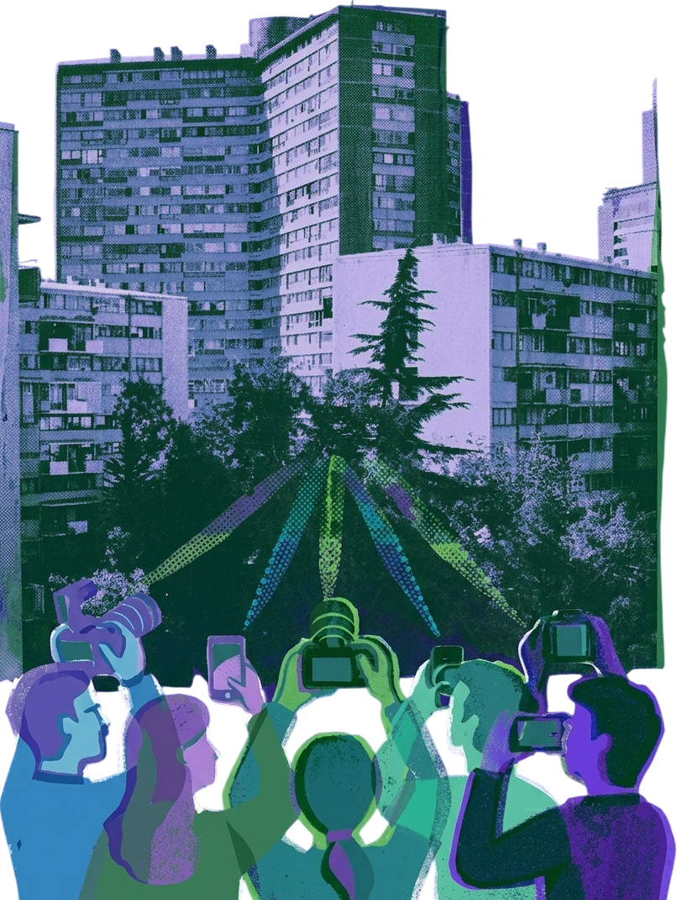
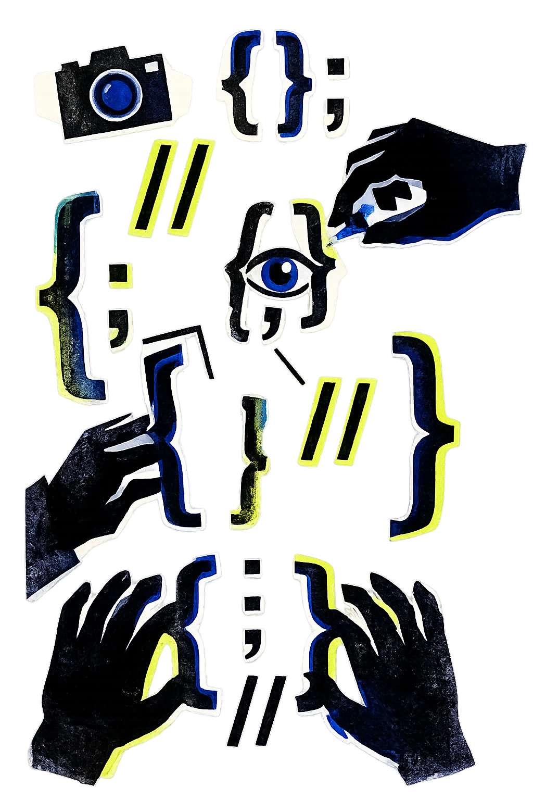
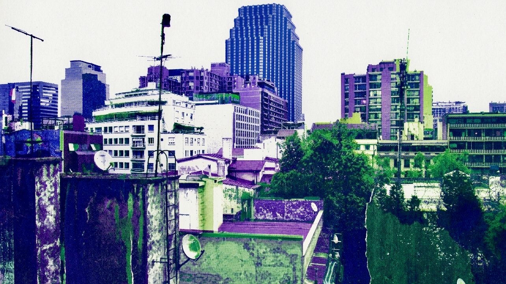

About Sobre mí
I am a chilean sociologist. My work is grounded in qualitative and mixed-methods research and oriented toward the production of rigorous knowledge with social impact. I currently complement my sociological training with studies in Programming and Systems Analysis in order to strengthen my research and dissemination tools.
Soy socióloga y vivo en Chile. Mi trabajo se sitúa en la investigación cualitativa y métodos mixtos, y se orienta a la producción de conocimiento riguroso con incidencia social. Actualmente complemento mi formación en sociología con estudios en Programación y Análisis de Sistemas para fortalecer mis herramientas de investigación y difusión.
Research Interests Intereses de investigación
Social inequality, economic sociology, housing and everyday life, economic and financial socialization, education in contexts of confinement, interculturality, material environments and social organization, and qualitative and mixed methods. I am currently exploring visual methodologies for social research. On the one hand, I am interested in the use of R and programming for data visualization; on the other, in the use of photography as a tool for social research. In the “Notes” section, you will find some reflections on these topics.
Desigualdad social, sociología económica, vivienda y vida cotidiana, socialización económica y financiera, educación en contextos de encierro, interculturalidad, entornos materiales y organización social, y metodologías cualitativas y mixtas. Actualmente estoy indagando en metodologías visuales para la investigación social. Por un lado, a partir del uso de R y la programación para visualizar datos y, por otro, el uso de fotografías para la investigación social. En la sección "notas" encontrarás algunos apuntes sobre este tema.

Selected Projects Proyectos en los que he participado
Family Financial Socialization in Chile Socialización financiera familiar en Chile
Research on financial socialization in moderate-income households and everyday economic practices in Chile.
Investigación sobre socialización financiera, gramáticas afectivas y prácticas económicas cotidianas en hogares chilenos de ingresos moderados.
Interculturality, Cinema, and School Inclusion Interculturalidad, cine e inclusión escolar
Qualitative and mixed-methods research on cinema, intercultural experiences, and social inclusion in public schools.
Investigación cualitativa y con métodos mixtos sobre cine, experiencias interculturales e inclusión social en escuelas públicas.
Education in Carceral Contexts Educación en contextos de encierro
Collective and socio-educational work focused on education in prison contexts from a gender perspective.
Trabajo colectivo y socioeducativo centrado en la educación en contextos de encierro desde una perspectiva de género.
Collective Projects Proyectos colectivos
Collective Mapping Bulletin with Colectiva Jengibre Boletín de mapeo colectivo con Colectiva Jengibre
A 2019 participatory bulletin developed with Colectiva Jengibre in Puente Alto, documenting the planning of a collective mapping process focused on territory, identity, inequality, and community organization.
Boletín participativo elaborado en 2019 junto a Colectiva Jengibre en Puente Alto, que documenta la planificación de un proceso de mapeo colectivo centrado en territorio, identidad, desigualdad y organización comunitaria.

Curriculum Vitae Currículum Vitae
The current academic CV is available in PDF format.
El CV académico actualizado está disponible en formato PDF.
